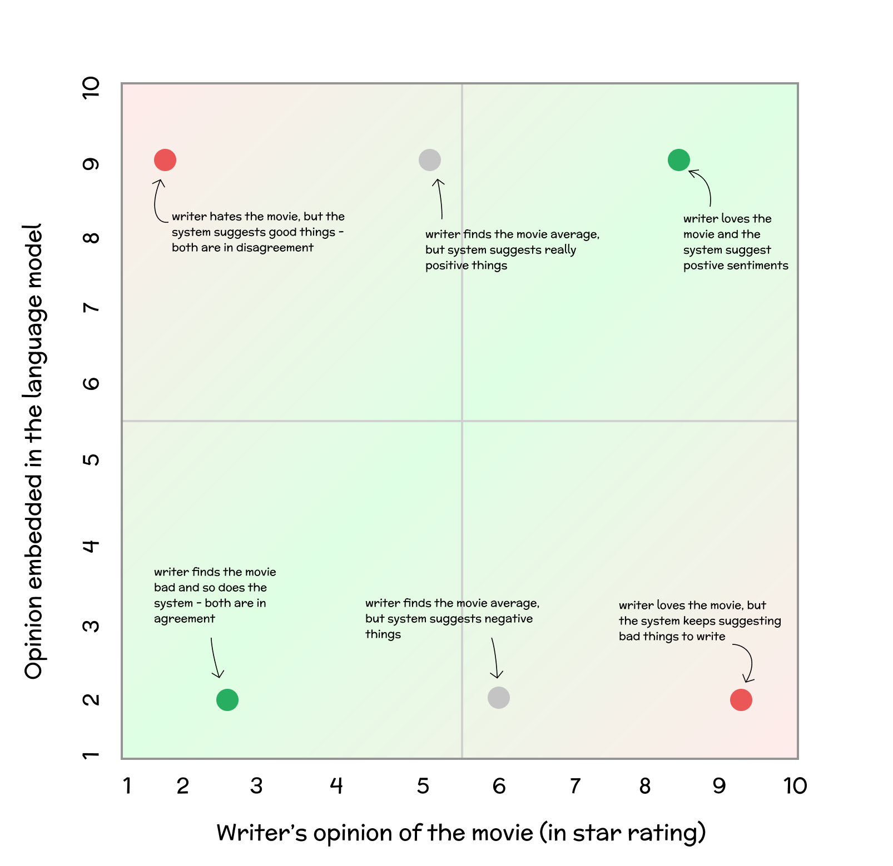
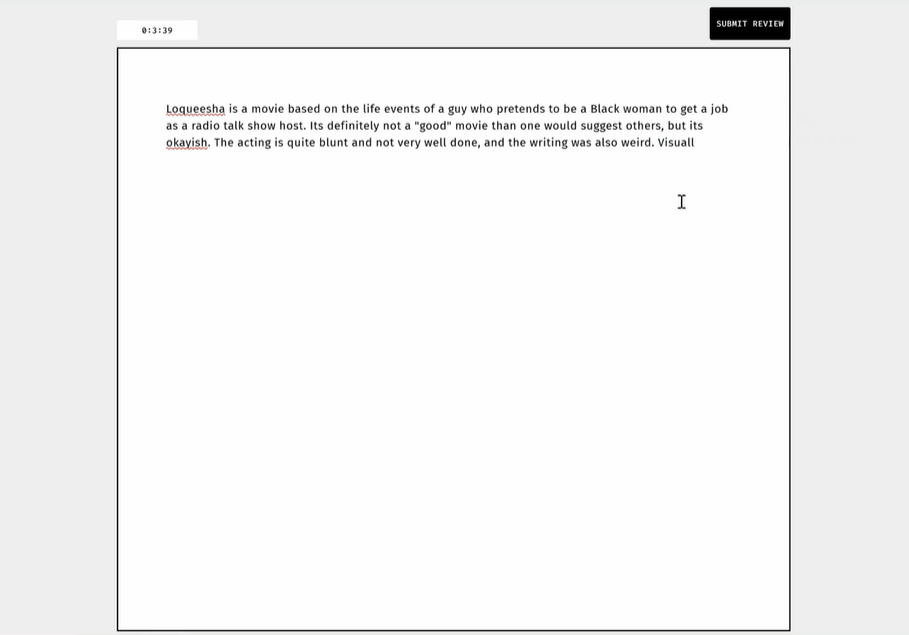

, Saaket Agashe, Parth Oberoi, Niharika Mohile, Ravi Jangir, Anirudha Joshi・🏆 Best Paper Honourable Mention @ IUI’23
How do People Interact with Biased Text Prediction Models while Writing?The project explores the interaction between writers and next-phrase suggestion systems, a technology increasingly used in writing interfaces like Google Smart Compose. These systems offer real-time phrase suggestions as the writer types, influencing writing style and content. Despite technological advancements in natural language processing enabling these interfaces, understanding of their impact on writers is limited.
Our study focuses on the cognitive aspects of writing in the presence of suggestion systems. Utilizing the Hayes Cognitive Process Writing Model, we examine how writers interact with these technologies and the cognitive processes involved. We investigate the influence of suggestion systems on writing, particularly how misalignments between the system's sentiment and the writer's opinion impact this interaction.
For our research, we selected a movie review task, employing a suggestion system based on GTP-2 fine-tuned on the IMDb movie reviews corpus. Participants were asked to write reviews for two movies, once with the suggestion system enabled and once without, while expressing their personal opinions and thinking aloud. Through qualitative coding of think-aloud and retrospective protocols, we analyzed the complex interactions between writers and the suggestion system.
Our findings reveal that writers engage with suggestions in multifaceted ways, often incorporating parts of a suggestion even when they disagree with its overall sentiment. The system influenced the writing process, altering writing plans and causing distractions, among other effects. We propose a model of writer-suggestion interaction and discuss how suggestion systems can be analyzed through this model. We also outline potential research directions and design opportunities for such systems, emphasizing their impact on the cognitive writing process.
We developed a predictive text editor with next phrase suggestions and word completion capabilities for conducting the study. The editor provides suggestions when the user pauses for more than 300ms while typing. Suggestions appear either in-line or as a box near the cursor, depending on the text position. Users can select words using the tab key, choosing any number of words from the offered suggestion. We enhanced the design iteratively, initially presenting the entire phrase as a selection, but later allowing single-word selections for better user convenience. To differentiate between user text and suggestions, we used distinct styling and added interpuncts between words in the suggestion phrase.
The final interface included a timer and a submit button for user convenience and data collection. The text editor was developed using a Flask back-end and JQuery front-end. It sends keypress requests to the server, which computes the suggestions and returns them within 300ms. The system processes the last 50 words typed by the user for generating suggestions. Our server setup included a NVIDIA Tesla K80 card and an Intel Xeon E5-2690 v3 processor with 56 GB RAM, hosted in the Azure server ecosystem.
For text prediction, we used a GPT2 transformer model, fine-tuned on an IMDb movie review corpus. This fine-tuning was done for three epochs, achieving specific perplexity scores for positive and negative models. The Hugging Face transformers library was used for training, and the beam search algorithm for generating phrase suggestions.
We conducted sentiment validation using a pre-trained BERT Sentiment Classifier to check the bias inheritance of our models. This involved generating phrase completions for prompts from the test set and analyzing the completed sentences through the BERT model. The logit scores indicated successful bias inheritance in our models.
In the text editor, suggestion behavior varied based on the alignment with the writer's sentiment. We categorized these into exact alignment, slightly opposite alignment, and misalignment, demonstrating how the suggestion system interacted with the writer's intentions. This behavior was crucial for understanding the impact of predictive text editors on the writing process and user experience.
| System (Down) vs Writer (Right) | Positive | Slightly Positive | Slightly Negative | Negative |
|---|---|---|---|---|
| Positive | U5 (9, 0.5): This movie has all the makings of a classic | U7 (8, -0.5): the pacing of this movie is a little slow at times, but it's a very good movie | U9 (5, -3.5): The acting is blunt and not very well done, but the writing is also pretty good. | U12 (1, -7.5): There wasn't a single thing done right in the film, but that doesn't stop it from |
| Negative | U3 (9, 6.5): ...the characters were decent. However, the movie was so bad that I... | U10 (7, 4.5): The lead singer is good, but the rest of the cast... | U6 (5, 2.5): ...made me feel attentive all the time and I would not prefer the same. This movie is a waste of time and money. | U14 (1, -1.5): ...directed by James Franco and is a terrible film. The acting is awful and the characters... |
The findings from our study provide valuable insights into how writers interact with next-phrase suggestions in a predictive text editor. We observed that writers utilize suggestions in multiple nuanced ways, even when they do not directly accept them. Writers engaged with the suggestions at various levels:
A critical aspect of the interaction was the evaluation process. Writers employed various criteria to assess the suggestions, with the degree of alignment between the writer's intent and the suggestion's content significantly influencing this evaluation. Misalignment between the writer's perspective and the suggestion system played a major role, impacting not only the acceptance of suggestions but also the overall writing process.
We also noted several effects of the suggestions on the writing process:
Based on these findings, we propose a model of writer-suggestion interaction. This model outlines the ways in which writers interact with suggestions and offers a framework for future research and design of predictive text editors. The model underscores the complexity of writer-suggestion interactions and highlights the need for considering multiple facets of the writing process in designing and analyzing suggestion systems.